استعرض أحدث لقطات الشاشة مع النصوص والترجمة باللغة العربية
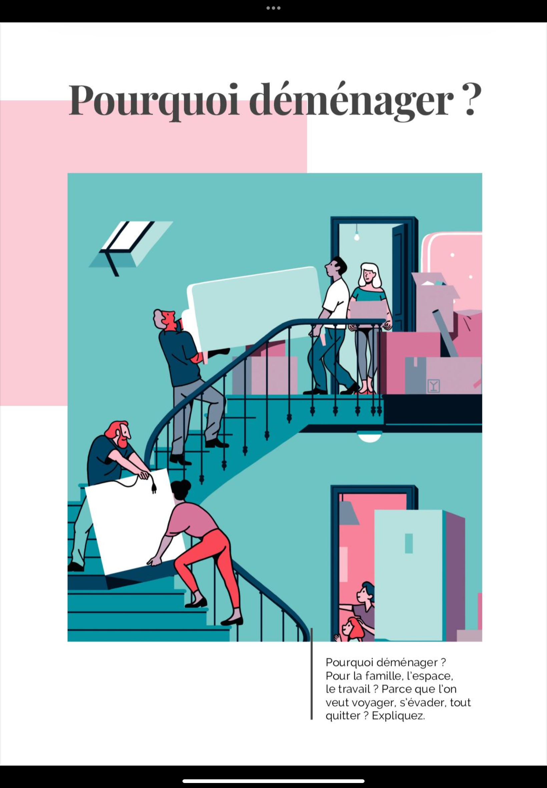
L'illustration montre des personnes qui déménagent et transportent des cartons.
تظهر الرسمة التوضيحية أشخاصاً ينتقلون إلى منزل جديد وينقلون الصناديق.
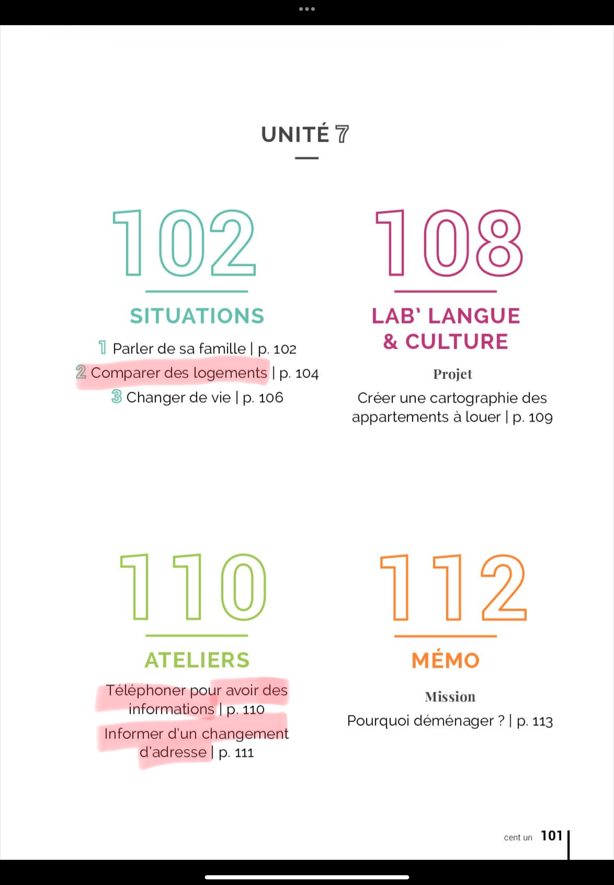
SITUATIONS: 1. Parler de sa famille. 2. Comparer des logements. 3. Changer de vie.
LAB' LANGUE & CULTURE: Créer une cartographie des appartements à louer.
المواقف: 1. التحدث عن العائلة. 2. المقارنة بين السكنات. 3. تغيير نمط الحياة.
معمل اللغة والثقافة: إنشاء خريطة للشقق المعروضة للإيجار.
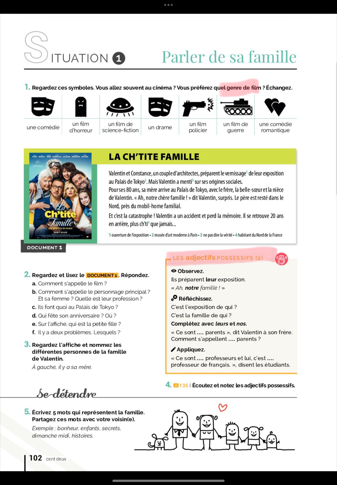
Changer de vie et trouver un nouveau logement.
تغيير الحياة والعثور على مسكن جديد.
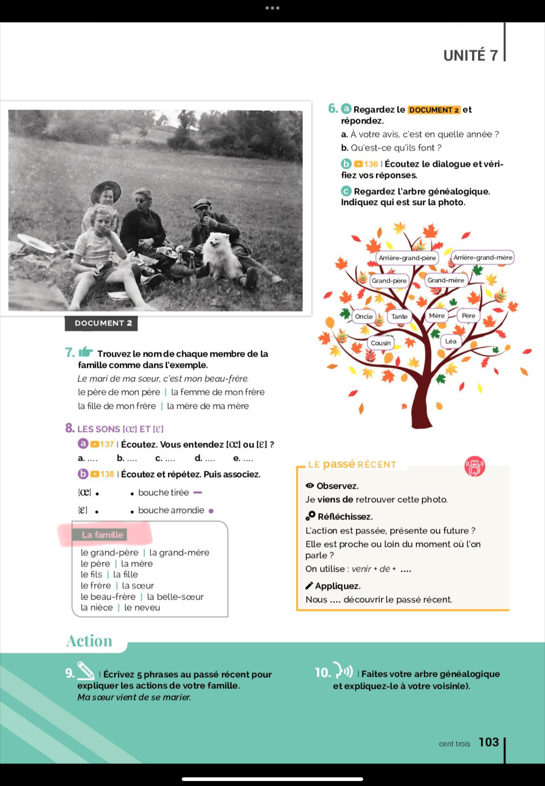
Vocabulaire du logement et de la description de l'appartement.
مفردات السكن ووصف الشقة.
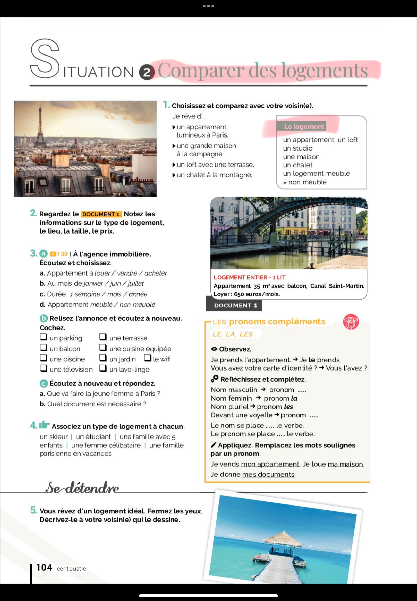
Grammaire: La comparaison et les adjectifs démonstratifs.
القواعد: المقارنة وأسماء الإشارة.
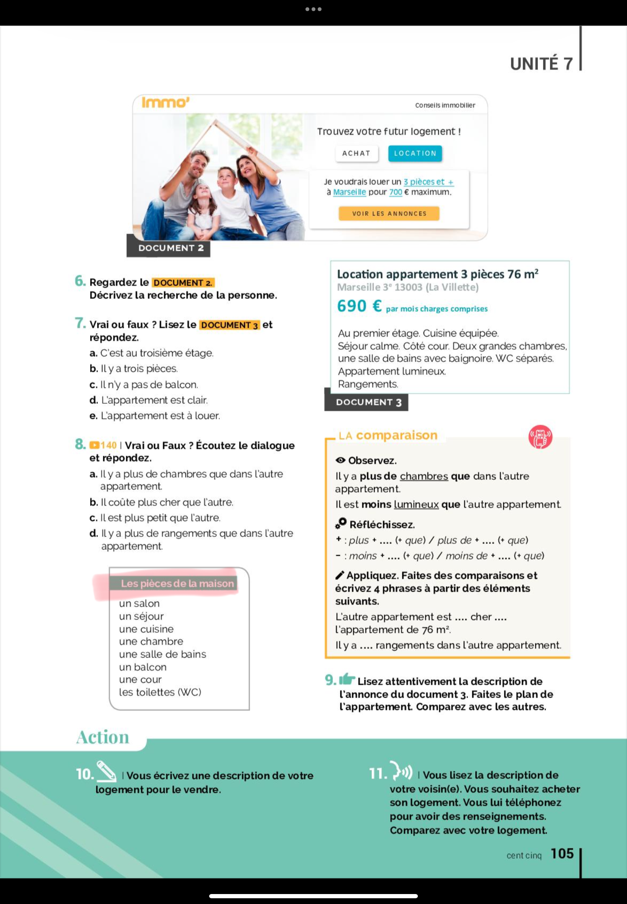
Compréhension orale: Écouter les documents et répondre aux questions.
الفهم الشفهي: الاستماع إلى التسجيلات والإجابة على الأسئلة.
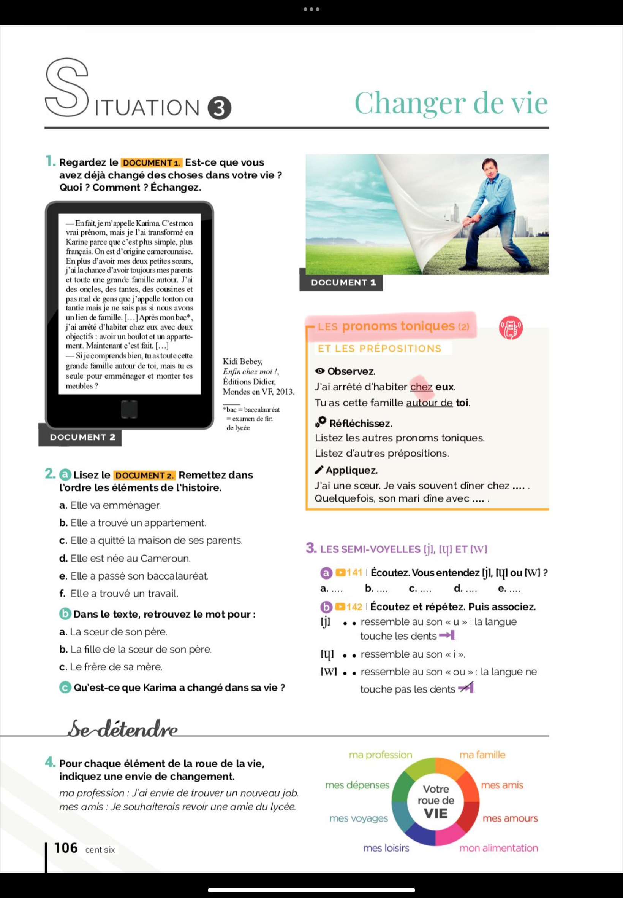
Expression écrite: Rédiger une annonce immobilière.
التعبير الكتابي: كتابة إعلان عقاري.
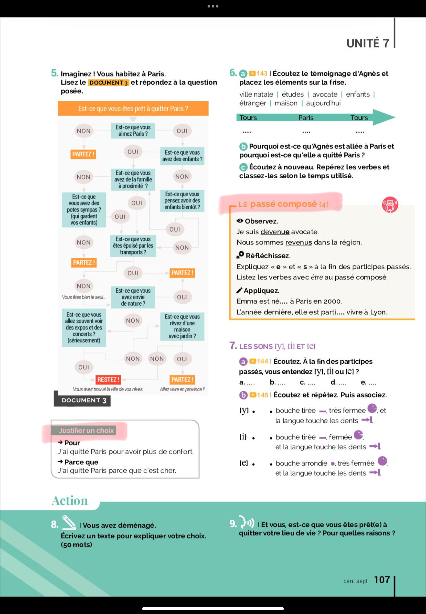
Phonétique: Les sons et la prononciation du français.
الصوتيات: أصوات ونطق اللغة الفرنسية.
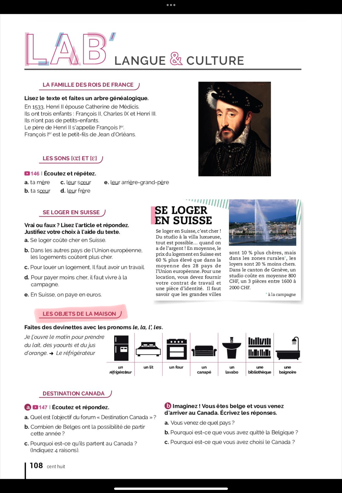
Activités interactives et exercices de vocabulaire.
أنشطة تفاعلية وتمارين على المفردات.
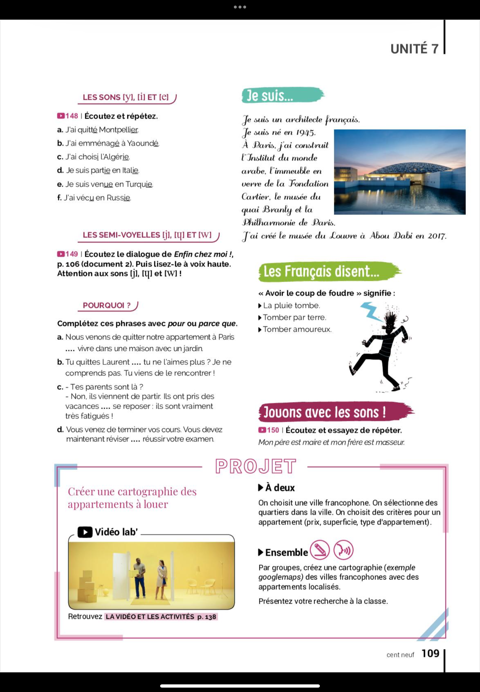
Culture: Les modes de logement en France.
الثقافة: أنماط السكن في فرنسا.
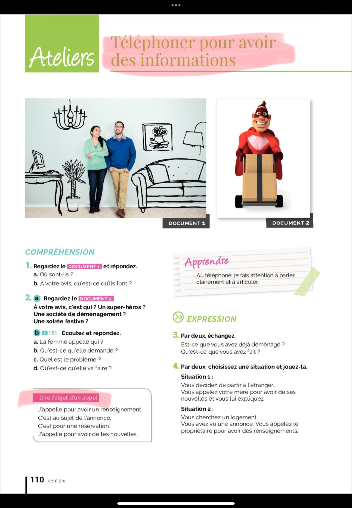
Exercices de compréhension écrite et lecture de textes.
تمارين الفهم الكتابي وقراءة النصوص.
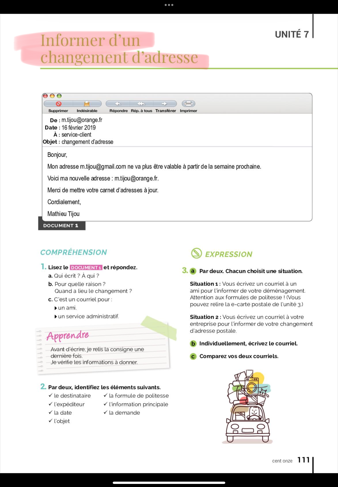
Atelier d'écriture et de production linguistique.
ورشة كتابة وإنتاج لغوي.
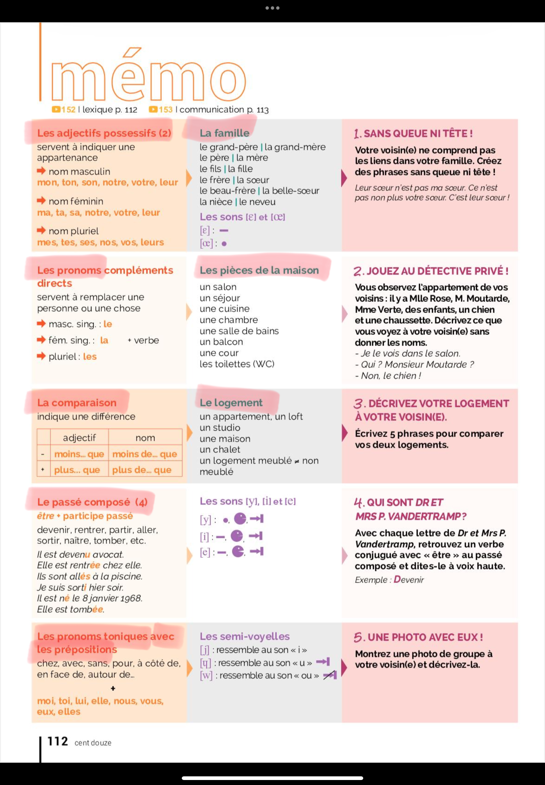
Évaluation et bilan des compétences acquises.
تقييم ومراجعة المهارات المكتسبة.
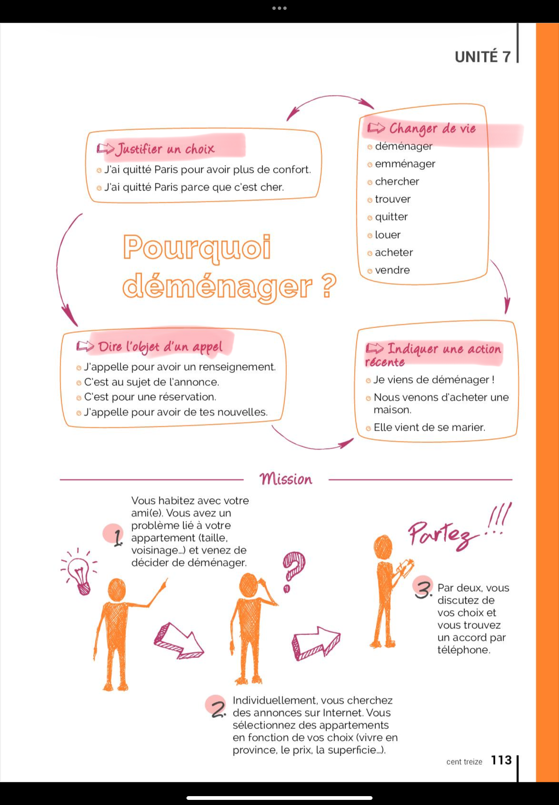
Projet final: Réaliser une présentation d'un projet de logement.
المشروع النهائي: تقديم عرض تقديمي لمشروع سكن.